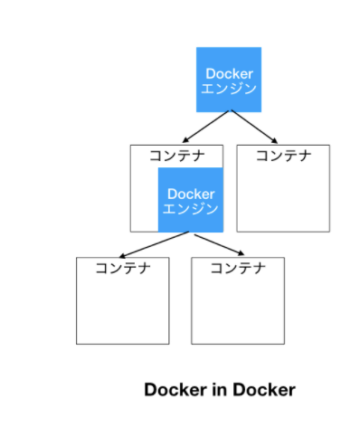
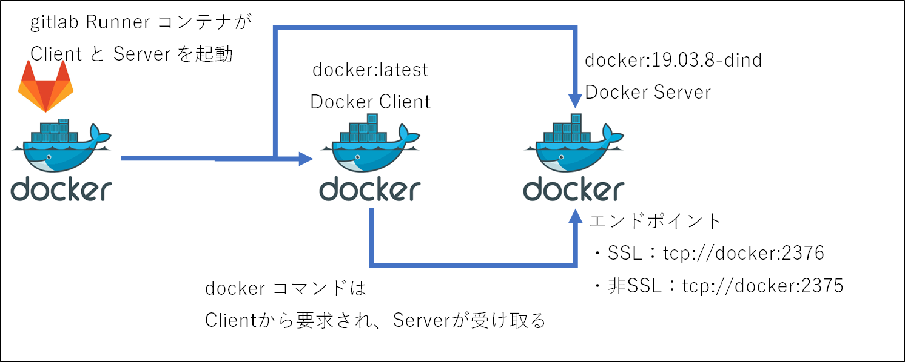

コンテナ化
Tweetタイトル考え中 > 自動リリース
自動リリース
新しく配属されたプロジェクトで Docker や GitLab で自動リリース機能構築(CD)など、これまで触れたことのない技術が大量にあったので、それらを使用することで少しでも早くその技術になれ、使いこなせるようになりたかった。
なので今後コンテナ化、GitLab で CD 機能を構築していくが、その前に cron から脱却し、各言語のスケジューラを使用することでコンテナ化したときの移植性を高めたい。
稼働時間を変えたいとか、新しく bot を作った時の稼働タイミングの設定を各アプリで行うことで、ローカルで設定したものを GitLab に push してしまえば後は勝手にリリースされて時間になったら bot が稼働するという状態を目指したい。
作ったもの（実際に稼働したときのツイート）
内容は対応前後で変化なし。
どんな仕組み？

GitHub を GitLab に移植するのが面倒なので今はこうなってる。
.gitlab-ci.yml(Go)
.gitlab-ci.yml(python)
.gitlab-ci.yml(Java)
ぶつかった壁とか学んだこととか
python のbot を詰め込んだ Docker が起動しない
発生したエラー
アーキテクチャーの違い。
python で pyinstaller を使って軽量なコンテナイメージを作ろうとした際、最初は Alpine を使おうとしていた（コンテナ化したのは Go が先で Go は Alpine を使っていたから）。
コンテナに乗せる前に python のコードを build する必要があるが、 python が入っていないと build できないため、 GitLab のパイプラインで使用するイメージは python:3.10 を使って、出来上がった成果物を alpine で動かそうとしていた。
python:3.10 は debian形式なので、そこで生成した成果物を Alpine で動かそうとしても動かない。
python:<version>-alpine のイメージもあるが、debian も使ってみたかったので、ベースイメージを Alpine から debian に変更することでうまく動くようになった。
パイプライン自体は割とすんなり動いたけど一つ一つのコマンドの理解が追い付いていない部分があるので後日ちゃんと追いたい
python

設定の外部ファイル化(json, .env)
手動でリリースしていたのでパスワードとかコードに直書きしていたが、 GitLab で管理するなら外部ファイル化しないとまずいので対応
twitter API の認証情報とか postgres の接続情報などを外部ファイル化した。 Go, python 共通で使うものなので json で保存。 postgres の接続情報は Java でも使っているが、既に property ファイル化していたため、そこは property のままにしている（json にした方が良いかな・・・）
json ファイルは手動で linux サーバに配置している。
また、json ファイルの格納場所はローカルと linux で異なるので、格納場所を環境変数で設定するようにした。
Go で
godotenv というライブラリを使用している。 .env 形式のファイルを読み込んで環境変数を設定してくれるもの。
.env ファイルの中はこんな感じ
[環境変数名]="[設定値]"
これで.env ファイルに記載している環境変数が設定される。
「val := os.Getenv("[環境変数名]")」で環境変数に設定された値を取得できる。今回の場合はこれで json ファイルのフルパスが取得できるので、 os.ReadFile(val) で json を読み込むことができる。
json の読み込みは Go の標準の 「encoding/json」の json.Unmarshal() でOK
python で
python-dotenv という外部ライブラリを使用。Go の godotenv と使い方は同じで、 .env ファイルを読み込んで環境変数を設定してくれる。
os.getenv("[環境変数名]")) で環境変数を読み込めるので、 jsonFile = open(str(os.getenv("[環境変数名]")), "r", encoding="utf-8") でファイルを開き、 json.load(jsonFile) で json 読み込み。これは python の標準ライブラリ。
DOCKER_HOST: tcp://docker:2375って何？
参考GitLab の CI/CD の中で dockerコマンドを実行するために Docker in Docker という技術を使っている。
DOCKER_HOST は docker デーモンの URL を指定します。Docker クライアントでは、デフォルトは unix:///var/run/docker.sock です。
下記の構成を取った場合のserverのエンドポイントは（非SSLの場合）tcp://docker:2375 なので、DOCKER_HOST を tcp://docker:2375 とすることでServerに対してdockerコマンドを発行している。

ssh 関係コマンド
- eval "$(ssh-agent)"：ssh-agentの起動。「ssh-agent bash」でも起動できるがこれだと環境変数を設定する必要があって面倒らしい（参考）
- ssh-add "$ID_RSA_DEPLOY"：秘密鍵をssh-agentに登録
- - mkdir ~/.ssh/ && chmod 0700 ~/.ssh
- ssh-keyscan -p$PORT -H sagamax.cyou > ~/.ssh/known_hosts
⇒これいる？と思ったけどおそらく「Are you sure you want to continue connecting (yes/no)?」を聞かれないようにするためか。
ssh-keyscan コマンドは複数のホストのsshの公開鍵を収集するためのコマンド。これで収集した公開鍵を known_hosts に登録することで yes/no を聞かれないようにしている。
ssh終了コマンド実行してなくない？ssh-agent -k
ssh
- SSH-KEYSCAN(1)
- 【SSH】ssh-agent の使い方
- ssh-agentを使って公開鍵認証方式のsshパスワード入力を省略する方法
- SSHについて調べてみた
- ssh-keyscan コマンドがあるらしい
- 【SSH】ssh-agentの使い方を整理する
- Gitlab CI-リモートサーバーにSSH経由でデプロイ
- deployment - Gitlab CI：SSH経由でリモートサーバーにデプロイする
- GitLab Runnerで任意のSSH接続を行いたい
Gitlab
Docker
- OSX - Gitlab-runner "error during connect: Get http://docker:2375/v1.40/containers/json: dial tcp: lookup docker on 192.168.65.1:53: no such host""
- DOCKER_HOSTを指定してVM外からdockerを操作できるようにする
- Compose CLI 環境変数
- リモートサーバーの中のDockerにローカルから接続する
- Dockerコンテナ内からDockerを使うことについて
- Use Docker to build Docker images
- Services
- GitLab の CI/CD で Docker in Docker